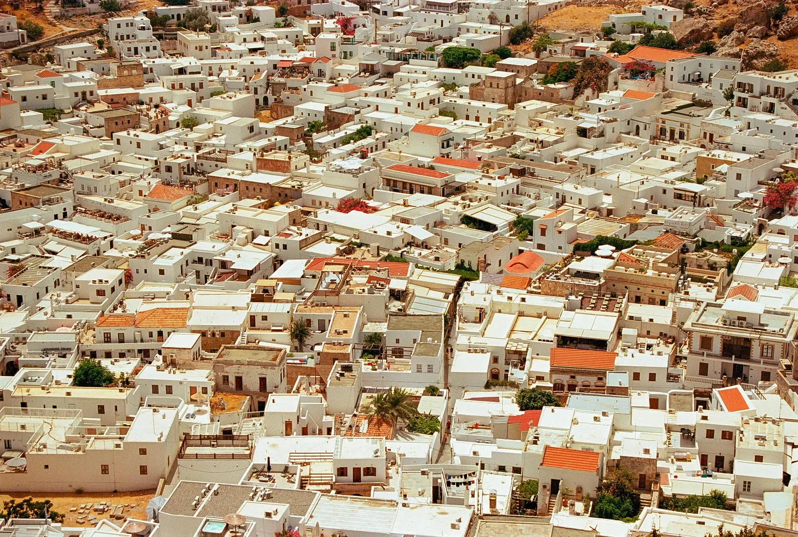

갈매기 한 마리만 더 나한테 소리 지르면, 진짜 이 빌어먹을 옥상에서 뛰어내려서 날카로운 곳에 박히고 말 거야. 그늘도 없고, 간식도 없고, 정신도 없어—그냥 이 하얀 벽들에 태양빛이 사탄이 디자인한 디스코볼처럼 반사되는 끝없는 고통만 있을 뿐이야. 옥상 전체가 프라이팬이고, 난 그 위에서 내 멍청한 선택들 때문에 천천히 익어가는 달걀이야. 아래를 보면, 제멋대로 얽힌 지붕들로 가득한 미로 같은 광경이 있고, 지붕 사이사이에 내 추락이 얼마나 극적일지 딱 보일 만큼의 틈들이 있어. 뛰어내리면 분명 뭔가 중요한 게 부러질 거지만, 적어도 이 깃털 달린 놈들한테서 벗어날 수 있을 거야.
[If one more seagull squawks at me, I swear I’m throwing myself off this damn rooftop and aiming for something sharp. No shade, no snacks, no sanity—just the relentless glare of the sun bouncing off these blindingly white walls like a disco ball designed by Satan himself. The whole rooftop is a frying pan, and I’m the egg, slowly cooking in my own dumb choices. Below me, it’s a sea of mismatched roofs, crammed together in a haphazard maze, with just enough gaps between them to make my inevitable fall that much more dramatic. If I jump, I’m definitely cracking something important, but at least I’d get a break from these feathered jerks.]
갈매기들이 몇 시간째 계속 맴도는 것처럼 느껴져, 그 날카로운 소리로 이 작은 마을 사람들 전부한테 옥상에서 멍청한 관광객 하나가 타고 있다는 걸 다 알리고 있는 것 같아. 한 마리를 쫓아내려고 대충 손을 휘저어 봤지만, 이 새들은 길거리 쥐처럼 배짱이 넘쳐—그냥 그 꼬락서니로 내 눈을 똑바로 쳐다보면서 꿈쩍도 안 해. 걔들 속마음이 들리는 것 같아. “그래, 인간. 뛰어내려 봐. 떨어지는 도중에 한 번 더 똥이나 싸줄게, 재밌게.”
“그래, 계속 해봐,” 난 이를 악물고 중얼거려. “또 한 번 맞아 보라고.”
[The seagulls have been circling for what feels like hours, their shrill, piercing cries probably alerting every soul in this tiny town that there’s a clueless tourist baking on a rooftop. I wave my hand at one of them in a half-hearted attempt to shoo it away, but these birds have the guts of street rats—they just stare back with those beady eyes, completely unfazed. I can almost hear their thoughts. “Come on, human. We dare you to jump. We’ll poop on you halfway down just for fun.”
“Yeah, keep it up,” I mutter through clenched teeth. “I’d love to see you try to hit me again.”]
밑에 깔린 타일이 녹아내릴 것 같아서 몸을 옮겨봤지만, 옆에 있는 축축한 자리도 피해야 했어, 그건 저 새놈들 중 하나가 남긴 흔적이지. 아, 그리고 가까이에 빨랫줄에 대충 걸린 빨래가 바람에 축 늘어져 펄럭이고 있어, 마치 항복의 깃발처럼. 어떤 불쌍한 놈의 줄무늬 팬티가 바람에 흔들리는데, 내 위기에 전혀 아랑곳하지 않고 있지. 인생에서 최악의 날을 보내고 있을 때, 오히려 별거 아닌 것들이 더 눈에 띄는 게 웃기지 않아? 마치 저 남의 팬티가 나한테 손 흔들면서 “야, 인생 우리 모두 엿같잖아"라고 말하는 것처럼.
[The tiles under me feel like they’re about to melt, and I shift, trying to avoid the scorching heat and the damp spot next to me, courtesy of one of the birds. Oh, and there’s someone’s laundry flapping lazily on a line nearby, like a flag of surrender. Some poor guy’s boxer shorts—striped, by the way—sway in the breeze, totally oblivious to my crisis. Funny how, when you’re having the worst day of your life, it’s the little things that stand out. Like some stranger’s underpants, waving at you like they’re saying, “Hey, buddy, life sucks for all of us.”]
땀에 젖은 머리를 쓸어올리면서 내가 어떻게 여기까지 오게 됐는지 생각해 보려고 했어. 이 모든 게 ‘간단한’ 일에서 시작된 거지—쉽고 별거 아닌 거래라고 했던 거. 그런 거 알잖아, 어두운 골목에서 남자 하나를 만나서 이게 안 좋은 생각이란 걸 아닌 척하는 그런 '별거 아닌 거래’. 눈에 안대 쓰고 있던 그 남자를 봤을 때 알아봤어야 했는데—진짜, 누가 안대를 쓰고 다니겠어, 골칫덩이 아니면 어린이 생일 파티에서 해적 코스프레라도 하는 놈이겠지. 근데 나는 생각했지, "한 번쯤은 믿어보자.” 멍청하지.
[ I rake my hand through my sweat-drenched hair and try to piece together how I ended up here. It all started with a 'simple’ job—a quick, under-the-table deal that was supposed to be nothing but a harmless exchange. You know, those kind of 'harmless exchanges’ where you meet a guy in a dark alley and pretend it’s not a terrible idea. I should’ve known better the moment I laid eyes on that guy—he had an eye patch, for crying out loud. Nobody wears an eye patch unless they’re trouble or pretending to be a pirate at a kid’s party. But no, I thought, “Let’s give him the benefit of the doubt.” Idiot.]
그리고 지금 나는 여기서, 동네 양아치들하고 옥상에서 쫓고 쫓기는 놀이를 하고 있지. 그 놈들은 내가 살아서 잡히든 조각이 나서 잡히든 신경도 안 쓰는 것 같아. 이 모든 게 멍청한 열쇠 하나 때문이야. 지금도 내 허벅지에 파고들면서 내가 실패하고 있다는 걸 계속 상기시켜 주고 있는 그 열쇠. ‘성공의 열쇠를 찾아라’라고 말한 사람, 분명 땀에 절은 깡패들한테 쫓기면서 뼈 부러질 걱정이랑 미친 갈매기 떼를 피하려고 애쓰던 건 아닐 거야.
[And now, here I am, playing rooftop tag with a bunch of local thugs who really don’t seem to care if they catch me alive or in pieces. All this because of a stupid key. The one that’s currently digging into my thigh, reminding me of my ongoing failure. Whoever said, “Find the key to success” clearly wasn’t being chased by sweaty goons while trying to avoid both broken bones and a flock of insane seagulls.]
아래 좁은 거리를 찡그리고 내려다봐. 저 하얗게 칠해진 벽들과 햇빛에 바랜 문들 사이 어딘가에 이 열쇠로 열 수 있는 자물쇠가 있을 거야. 물론, 이 멋진 지중해 미로에서 모든 문이 똑같이 생겼지. 나를 만나기로 했던 그 놈? 사라졌어. 증발했지. 아마 그늘진 카페에서 아이스 커피나 홀짝거리면서 내가 여기서 바보처럼 천천히 구워지는 걸 보며 깔깔대고 있을 거야.
[ I squint at the narrow streets below. Somewhere down there, between these whitewashed walls and sun-bleached doors, is the lock this key opens. Of course, in this lovely little Mediterranean maze, every door looks the same. And the guy who was supposed to meet me? Gone. Vanished. Probably sipping an iced coffee in some shady café, laughing his head off while I slowly roast up here like a dumb turkey.]
내 머릿속의 불평을 끊는 큰 소리가 골목 어딘가에서 울려 퍼졌어. 심장이 한 박자 쉬어갔지. 나는 옥상 가장자리로 조금씩 다가가서 아래를 내려다봤어. 예상대로—덩치 큰 두 남자가 현지인들 사이를 밀치며 나아가고 있었어. 땀에 절은 셔츠와 똑같은 인상—마치 “누군가의 무릎을 부수러 왔다"는 듯한 표정으로 도무지 주변에 섞일 생각이 없어 보였지. 그중 한 놈이 멈춰서 옥상을 찡그리고 올려다보고, 나는 숨도 못 쉬고 얼어붙었어. 찰나의 순간이지만, 우린 눈이 마주친 것 같았어. 너무 멀어서 확실하지는 않지만, 내 직감이 말해. 나 들켰다고.
[ A loud crash interrupts my internal rant, echoing up from one of the alleys below. My heart skips a beat. I inch toward the edge of the roof and peer down. Just as I feared—two burly men are shoving their way through a crowd of locals. They’re not exactly blending in, with their sweat-stained shirts and matching scowls, the kind of scowls that say, "We’re here to break someone’s kneecaps.” One of them pauses, squints up at the rooftops, and I freeze, barely breathing. For a split second, I swear we lock eyes. He’s too far away to be sure, but my gut tells me I’ve just been made.]
좋아. 낮은 자세 유지하자는 계획은 끝났군.
그때 갈매기들이, 진짜 미친놈들처럼, 정확히 이 순간에 완전 난리를 치기 시작했어. 마치 뷔페를 찾은 것처럼 시끄럽게 울어댔지. 다시 팔을 휘저어봤지만 소용이 없어. 차라리 나도 같이 날갯짓을 하는 게 나을 판이야. 오히려 갈매기들이 저 밑의 양아치들 편을 드는 것 같아. 팀 양아치 대 멍청한 관광객.
[Great. So much for keeping a low profile.
The seagulls, like the jerks they are, choose this exact moment to go full cacophony mode, squawking like they’ve just found a buffet. I wave my arms at them again, but it’s no use. I might as well be flapping along with them. If anything, it seems like they’re cheering for the two thugs below. Team Scumbags versus the Idiot Tourist.]
이마를 닦다가 너무 늦게 깨달았어. 땀과 선크림을 눈에 문질러 버렸지. 완벽해. 이제 반쯤 눈이 멀었어. 미친 듯이 눈을 깜빡이며 다시 거리를 내려다봤어. 두 양아치가 속도를 올리면서 군중을 라인배커처럼 밀어붙이고 있어. 많아 봐야 1분이야, 바로 내 밑까지 오기까지 말이야. 이제 움직여야 돼.
“그래, 그래,” 심장이 쿵쾅거리면서 나 스스로에게 속삭였어. “너 이보다 더한 것도 살아남았잖아. 너 할 수 있어.”
근데 진짜 할 수 있을까? 지난번에 이런 곤경에 빠졌을 때는 백업이 있었잖아—친구들, 장비, 계획. 지금은? 그냥 멍청한 열쇠 하나, 형편없는 방향 감각, 그리고 탈탈 벗겨진 피부가 전부야. 옥상 끝을 바라봤어. 거기에 다른 건물로 이어지는 좁은 난간이 있어. 그게 내 최선의 선택이지만, 거리가 꽤 멀고… 균형 감각이 좋은 편이라고는 전혀 말할 수 없지.
[I wipe my forehead, realizing too late that I’ve just smeared sweat and sunscreen into my eyes. Perfect. Now I’m half-blind. Blinking furiously, I glance down at the street again. The two thugs are picking up speed, bulldozing through the crowd like linebackers. I’ve got maybe a minute, tops, before they’re right beneath me. Time to move.
“Okay, okay,” I whisper to myself, heart pounding. “You’ve survived worse. You’ve totally got this.”
But do I? Last time I was in a jam like this, I had backup—friends, gear, a plan. Now I’ve got nothing but a stupid key, a bad sense of direction, and sunburn in places I didn’t even know could burn. I eye the far end of the roof, where there’s a narrow ledge leading to another building. It’s my best shot, but it’s a long way, and let’s just say I’ve never been known for my balance.]
갈매기들이 다시 덮쳐오더니, 하나가 내 머리 꼭대기를 스치고 지나갔어. 진짜 갈수록 대담해지고 있어. 아니면 걔네가 새들만의 마피아라도 결성해서, 날 쫓는 놈들이랑 한패가 된 게 틀림없어. 지금 보이는 것 같아—갈매기 조직, 빵부스러기 보호비를 받는 놈들.
길 아래서 또 한 번의 고함 소리가 들리자 아드레날린이 폭발했어. 양아치 둘이 바로 내 밑에서 옥상을 훑고 있었어. 내 탈출 기회가 초마다 줄어들고 있어. 깊게 숨을 들이쉬고, 옥상 가장자리에 손을 짚고 몸을 웅크린 채로 일어섰어.
“자, 가자,” 내가 중얼거렸어. “죽기 아니면 살기다.”
그리고 그대로 뛰었어.
[The seagulls swoop down again, one of them grazing the top of my head. I swear they’re getting bolder. Either that or they’ve formed some kind of avian mafia, working in cahoots with the guys chasing me. I can see it now—The Seagull Syndicate, charging protection fees in breadcrumbs.
Another shout from the street below sends my adrenaline into overdrive. The two thugs are right beneath me now, scanning the rooftops. My window of escape is shrinking by the second. I take a deep breath, plant my hands on the edge of the roof, and hoist myself up to a crouch.
“Here we go,” I mutter. “Do or die.”
And with that, I leap.]